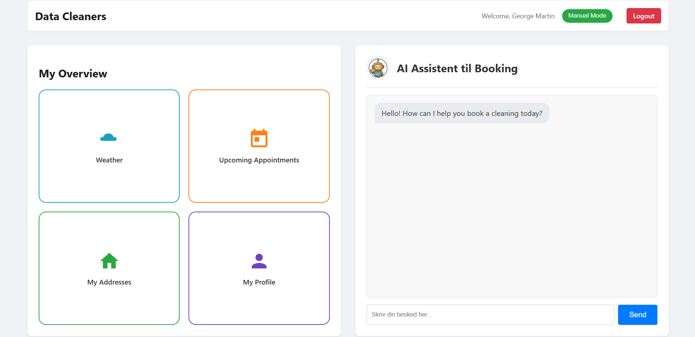

Role: UX Designer & Full-stack developer
Context: 9th semester project at Aalborg University in collaboration with a hypothetical case partner, Unit Cleaning, to address administrative inefficiencies, scheduling errors, and inconsistent customer reminder workflows
Timeframe: fall 2025
Description: his project pushes the boundaries of modern enterprise software by replacing tedious manual scheduling with Agentic Artificial Intelligence (AAI). For employers, it highlights high-value software engineering competencies: building a robust Flask backend, executing relational database design (MySQL/ER diagrams), integrating external APIs (Google Calendar and DMI weather forecasts), and embedding OpenAI LLMs with custom JSON schemas for tool-calling

Conclusion: Moving beyond basic CRUD digitization, the system features a hybrid user interface that pairs conversational AI flexibility with structured visual widgets (calendars, weather panels, and user profiles) to minimize cognitive load. Evaluated through Nielsen's heuristics, the project offers critical industry insights into system transparency, error recovery, and user trust when deploying autonomous agents in everyday workflows.